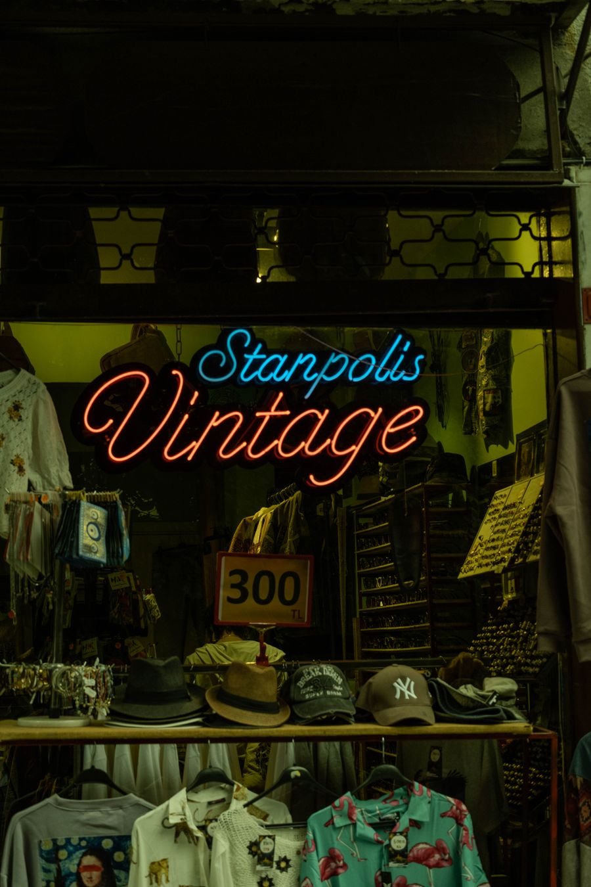
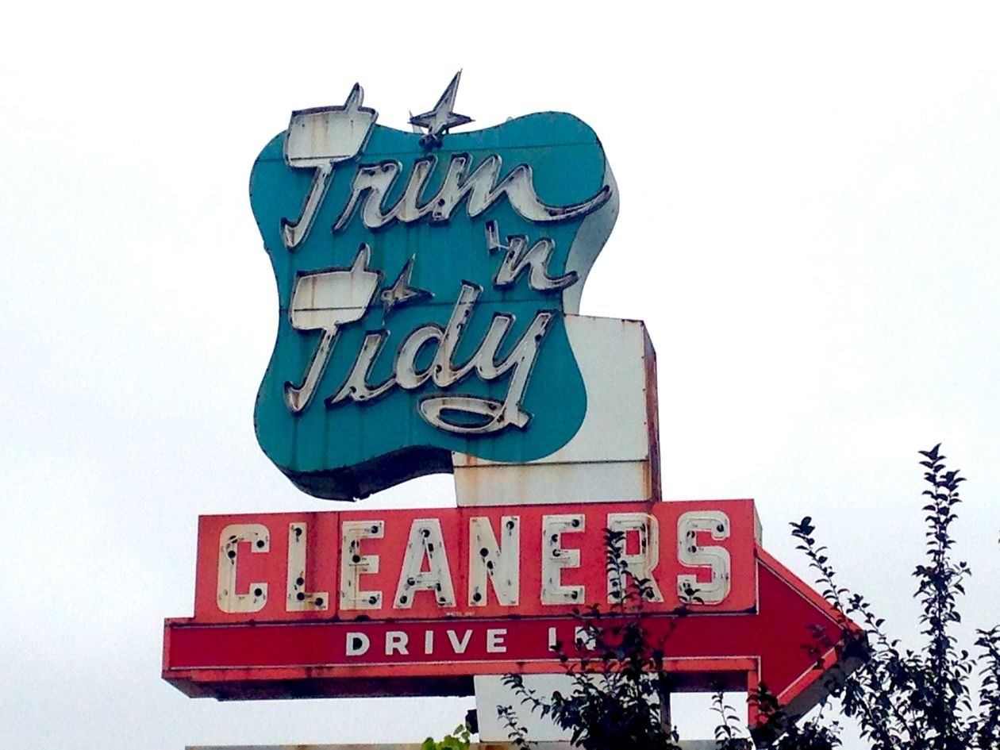

About the archive
The keeper & the method
One restorer, one bench, one index book that has been kept since 1998. This page is the archive's own entry: how it began, how a rescue runs, what it will not do, and the terms it works to.
How the archive began
Walter Dombrowski's grandfather painted fascia boards in the Black Country — the lettering above shops, done with a mahl stick and a steady nerve. His father went into glass, bending tube for a Birmingham neon works from 1968 until the trade thinned out in the nineties. Walter apprenticed at the same bench in 1989 and learned the two halves of the family trade in the wrong order for the times: how to make signs just as the country stopped wanting them made, and started wanting them gone.
The archive began with a demolition. In 1998 a cinema sign he had grown up underneath — nine letters, a border, a star he could draw from memory — came down with two days' notice. No photograph was taken. No drawing was made. The letters went into a skip in the rain, and the only record that the sign had ever existed was the memory of the people who had walked under it. He bought a notebook the same week. The first entry is that sign, written from memory, and marked as such: recorded late, from recollection, accuracy not guaranteed. It is still the most honest entry in the book, and it set the standard for the other 213.
The workshop in Digbeth — a former tube works off Floodgate Street — followed in 2004. The index is kept on paper first, because paper does not need a password and outlives file formats; this site is its current page, set in the same order.

How a rescue runs
Five stages, in the order the bench does them. A documentation-only commission stops after stage two — deliberately, and by the book.
- 1
Survey
The sign is graded against Table A, photographed in daylight, and the owner receives the written condition report — £350, fixed. The report states the expected survival of the original glass before anyone is committed to anything.
- 2
Documentation
Pattern rubbings, measured drawings, dusk photographs lit and unlit, gas and glass notes. Every rescue produces this record whether the sign is saved or not; the owner keeps the originals.
- 3
Removal
Tubes come down in order and are crated in order, each crate labelled with its letter and its position. Access is by the printed class table — scaffold, MEWP, or a van and two careful people.
- 4
Bench
Original glass is cleaned, tested and kept wherever it is sound. What has failed is remade to the original pattern and stamped with its year on the reverse. Electrodes and transformers are renewed to the printed schedule, and the bench log records every decision.
- 5
Return
The sign is re-hung, wired and tested at dusk — the only honest time to judge it. The record is handed over, the index entry is updated, and the fate column changes in ink.

The honesty page — restoration ethics, printed
These six rules are read out, in effect, at every first meeting. They are also the reason some commissions are refused.
- Original glass is kept wherever it can be kept. A sign's glass is its substance, not its packaging. Replacement is a confession that something was lost, and it is made only where the glass has actually failed.
- Every replacement is marked. Remade sections are stamped with their year on the reverse, and the condition report lists them. A future restorer must be able to tell, at a glance, what is 1936 and what is 2023.
- History is evidence, not colour. Makers and dates are stated as ranges where the records are thin, and “not recorded” where there are none. The archive does not invent a maker to make an entry read better.
- The lost stay in the index. A demolished sign keeps its entry and its fate, in red. Deleting the lost would flatter the record and falsify the history of every street in it.
- The sign belongs to its place. Where a sign's story belongs to a town, a pier or a family business, the archive claims the rescue — never the sign. Its name is on the bench log, not on other people's landmarks.
- A remake is called a remake. A restored sign with all-new glass is a copy with a good story. It may still be worth making — Table C prices it — but it enters the index as what it is.
Engagement terms
Documentation basis
- The record
- Every engagement — rescue, documentation or loan — produces a written record: condition report, photographs, rubbings, drawings, bench log
- Ownership
- The owner keeps the original record. The archive retains a copy and the index entry, permanently
- Access
- Owners and bona fide researchers may consult the archive's copies at the workshop, by appointment
Money & the bench
- Survey
- £350 fixed, payable on delivery of the condition report, whether or not work follows
- Staging
- Bench work is staged: a deposit when the bench is booked, the balance on return and the dusk test
- Queue
- The bench takes two rescues a season. The queue is published in the index, not kept in a drawer
Electrical work
- The rule
- All mains wiring, final connection and certification is carried out by a registered electrician to current regulations
- The archive's part
- Glass, transformers to schedule, and the test record. The archive supplies artwork and evidence — it does not sign off mains work it is not qualified to sign
- Certificates
- Copies of the electrical certificates are filed with the sign's record and given to the owner
The index is only as good as its next report
Most entries began as a telephone call from someone who was not the sign's owner. If you know of a sign — standing, fading, or about to come down — the archive would rather hear early than read about it afterwards.
Report a sign